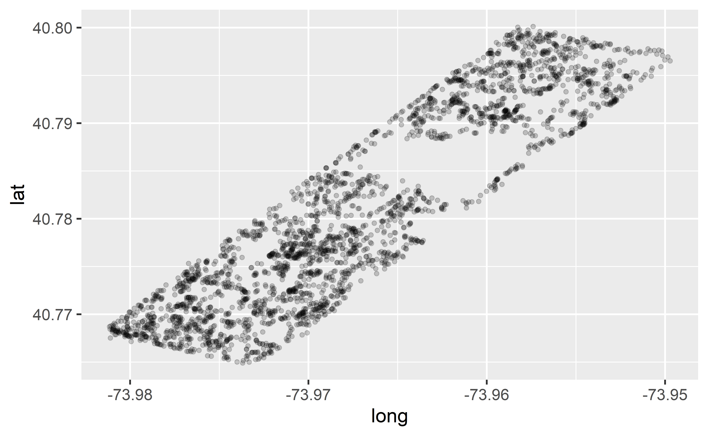

Doing data science
Data Science in a Box
layout: true
class: middle
What’s in a data analysis?
Five core activities of data analysis
- Stating and refining the question
- Exploring the data
- Building formal statistical models
- Interpreting the results
- Communicating the results
.footnote[ Roger D. Peng and Elizabeth Matsui. “The Art of Data Science.” A Guide for Anyone Who Works with Data. Skybrude Consulting, LLC (2015).]
class: middle
Stating and refining the question
Six types of questions
- Descriptive: summarize a characteristic of a set of data
- Exploratory: analyze to see if there are patterns, trends, or relationships between variables (hypothesis generating)
- Inferential: analyze patterns, trends, or relationships in representative data from a population
- Predictive: make predictions for individuals or groups of individuals
- Causal: whether changing one factor will change another factor, on average, in a population
- Mechanistic: explore “how” as opposed to whether
.footnote[ Jeffery T. Leek and Roger D. Peng. “What is the question?.” Science 347.6228 (2015): 1314-1315.]
Ex: COVID-19 and Vitamin D
1. Descriptive: frequency of hospitalisations due to COVID-19 in a set of data collected from a group of individuals
1. Exploratory: examine relationships between a range of dietary factors and COVID-19 hospitalisations
- Inferential: examine whether any relationship between taking Vitamin D supplements and COVID-19 hospitalisations found in the sample hold for the population at large
| 1. Predictive: what types of people will take Vitamin D supplements during the next year |
|---|
| 1. Causal: whether people with COVID-19 who were randomly assigned to take Vitamin D supplements or those who were not are hospitalised |
- Mechanistic: how increased vitamin D intake leads to a reduction in the number of viral illnesses
Questions to data science problems
- Do you have appropriate data to answer your question?
- Do you have information on confounding variables?
- Was the data you’re working with collected in a way that introduces bias?
–
.question[ Suppose I want to estimate the average number of children in households in Edinburgh. I conduct a survey at an elementary school in Edinburgh and ask students at this elementary school how many children, including themselves, live in their house. Then, I take the average of the responses. Is this a biased or an unbiased estimate of the number of children in households in Edinburgh? If biased, will the value be an overestimate or underestimate?]
class: middle
Exploratory data analysis
Checklist
- Formulate your question
- Read in your data
- Check the dimensions
- Look at the top and the bottom of your data
- Validate with at least one external data source
- Make a plot
- Try the easy solution first
Formulate your question
- Consider scope:
- Are air pollution levels higher on the east coast than on the west coast?
- Are hourly ozone levels on average higher in New York City than they are in Los Angeles?
- Do counties in the eastern United States have higher ozone levels than counties in the western United States?
- Most importantly: “Do I have the right data to answer this question?”
Read in your data
- Place your data in a folder called
data - Read it into R with
read_csv()or friends (read_delim(),read_excel(), etc.)
library(readxl)
fav_food <- read_excel("data/favourite-food.xlsx")
fav_food# A tibble: 5 x 6
`Student ID` `Full Name` favourite.f~1 mealP~2 AGE SES
<dbl> <chr> <chr> <chr> <chr> <chr>
1 1 Sunil Huffmann Strawberry y~ Lunch ~ 4 High
2 2 Barclay Lynn French fries Lunch ~ 5 Midd~
3 3 Jayendra Lyne N/A Breakf~ 7 Low
4 4 Leon Rossini Anchovies Lunch ~ 99999 Midd~
5 5 Chidiegwu Dunkel Pizza Breakf~ five High
# ... with abbreviated variable names 1: favourite.food,
# 2: mealPlanclean_names()
If the variable names are malformatted, use janitor::clean_names()
library(janitor)
fav_food %>% clean_names() # A tibble: 5 x 6
student_id full_name favourite_food meal_~1 age ses
<dbl> <chr> <chr> <chr> <chr> <chr>
1 1 Sunil Huffmann Strawberry yog~ Lunch ~ 4 High
2 2 Barclay Lynn French fries Lunch ~ 5 Midd~
3 3 Jayendra Lyne N/A Breakf~ 7 Low
4 4 Leon Rossini Anchovies Lunch ~ 99999 Midd~
5 5 Chidiegwu Dunkel Pizza Breakf~ five High
# ... with abbreviated variable name 1: meal_planCase study: NYC Squirrels!
- The Squirrel Census is a multimedia science, design, and storytelling project focusing on the Eastern gray (Sciurus carolinensis). They count squirrels and present their findings to the public.
- This table contains squirrel data for each of the 3,023 sightings, including location coordinates, age, primary and secondary fur color, elevation, activities, communications, and interactions between squirrels and with humans.
#install_github("mine-cetinkaya-rundel/nycsquirrels18")
library(nycsquirrels18)Locate the codebook
mine-cetinkaya-rundel.github.io/nycsquirrels18/reference/squirrels.html
–
Check the dimensions
dim(squirrels)[1] 3023 35Look at the top…
squirrels %>% head()# A tibble: 6 x 35
long lat unique_squ~1 hectare shift date hecta~2 age
<dbl> <dbl> <chr> <chr> <chr> <date> <dbl> <chr>
1 -74.0 40.8 13A-PM-1014~ 13A PM 2018-10-14 4 <NA>
2 -74.0 40.8 15F-PM-1010~ 15F PM 2018-10-10 6 Adult
3 -74.0 40.8 19C-PM-1018~ 19C PM 2018-10-18 2 Adult
4 -74.0 40.8 21B-AM-1019~ 21B AM 2018-10-19 4 <NA>
5 -74.0 40.8 23A-AM-1018~ 23A AM 2018-10-18 2 Juve~
6 -74.0 40.8 38H-PM-1012~ 38H PM 2018-10-12 1 Adult
# ... with 27 more variables: primary_fur_color <chr>,
# highlight_fur_color <chr>,
# combination_of_primary_and_highlight_color <chr>,
# color_notes <chr>, location <chr>,
# above_ground_sighter_measurement <chr>,
# specific_location <chr>, running <lgl>, chasing <lgl>,
# climbing <lgl>, eating <lgl>, foraging <lgl>, ...…and the bottom
.small[]
Validate with at least one external data source
.pull-left[] .pull-right[]
Make a plot
ggplot(squirrels, aes(x = long, y = lat)) +
geom_point(alpha = 0.2)
–
.pull-left-wide[ Hypothesis: There will be a higher density of sightings on the perimeter than inside the park.]
Try the easy solution first
.panelset[]
Then go deeper…
.panelset[]
The squirrel is staring at me!
squirrels %>%
filter(str_detect(other_interactions, "star")) %>%
select(shift, age, other_interactions)# A tibble: 11 x 3
shift age other_interactions
<chr> <chr> <chr>
1 AM Adult staring at us
2 PM Adult he took 2 steps then turned and stared at me
3 PM Adult stared
4 PM Adult stared
5 PM Adult stared
6 PM Adult stared & then went back up tree—then ran to differ~
# ... with 5 more rowsCommunicating for your audience
- Avoid: Jargon, uninterpreted results, lengthy output
- Pay attention to: Organization, presentation, flow
- Don’t forget about: Code style, coding best practices, meaningful commits
- Be open to: Suggestions, feedback, taking (calculated) risks